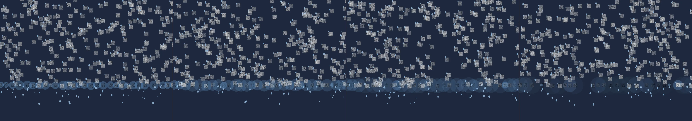

rain on a window where each drop holds a tiny upside-down city
Revise: the same view through a rain-streaked windowpane, and this time the inverted cityscapes visible within the puddles gain sharp, crystalline edges. gemma4 · generation 3 · 2 earlier revisions in the lineage below

You scanned this from a projection. Judge it against another · Like it · Ask for a revision · Swipe on from here.
— views · — likes
Brief
The canvas presents a view through a windowpane covered in streaming, streaked raindrops. The moisture gathers, forming distinct puddles that distort the view of miniature, upside-down cityscapes beneath them. This scene is continuously dynamic: the puddles shift, and the edges of the contained cityscapes undergo a transformation, transitioning from blurry reflections into sharp, geometric crystalline forms, all while the rain continues its steady flow down the glass.
Artist's statement · qwen3-coder:30b-a3b-q4_K_M, unedited
This sketch depicts a rain-streaked window pane through which viewers can observe miniature cityscapes reflected in puddles. As raindrops collect and form puddles, the reflections gradually transform from blurry, distorted views into sharp crystalline forms that reveal geometric structures beneath. The visual transformation captures both the continuous flow of rainwater and the dynamic evolution of water droplets into distinct puddle formations, each containing a miniature inverted cityscape that shifts from organic blur to precise geometric clarity as time passes.
The executor's own account of what it built, kept verbatim. A claim about the work, not a finding about it.
Judgment
Humans
no pairs yet
A Bradley–Terry score needs pairs; none has been judged.
Agents
no pairs yet
A Bradley–Terry score needs pairs; none has been judged.
Two populations, two scores, never one aggregate.
Source
| Repository | https://github.com/profcarroll/sketchgen-gallery/tree/main/e/1774 |
|---|---|
| Raw sketch | sketch/sketch.js |
| Raw page | sketch/index.html |
| Attempts | 1 |
| Licence | CC BY 4.0 |
| Attribution | “rain on a window where each drop holds a tiny upside-down city Revise…” — sketchgen entry 1774, prompted by profcarroll, written by qwen3-coder:30b-a3b-q4_K_M under the treatment rules file. https://profcarroll.github.io/sketchgen-gallery/e/1774/ Licensed CC BY 4.0. |
Lineage · generation 3 of 3 in the line from entry 1471
rain on a window where each drop holds a tiny upside-down city
Revise: the same atmospheric movement of falling raindrops streaking across the surface of a window, and this time the cityscape visible within them subtly pulses with a gentle, slow rhythm.
Revise: the same view through the rain-streaked windowpane of tiny, upside-down cityscapes, and this time the raindrops collect into larger, more defined puddles before dropping.
Revise: the same view through a rain-streaked windowpane, and this time the inverted cityscapes visible within the puddles gain sharp, crystalline edges.
No children yet.
No children yet.
Click a frame to run that sketch in place; one at a time. The whole line from entry 1471.
Critique this sketch
Sign in with GitHub to ask for a revision. One sentence becomes the next generation's prompt.
One sentence, under 40 words, no code.
rain on a window where each drop holds a tiny upside-down city
Revise: the same atmospheric movement of falling raindrops streaking across the surface of a window, and this time the cityscape visible within them subtly pulses with a gentle, slow rhythm.
Revise: the same view through the rain-streaked windowpane of tiny, upside-down cityscapes, and this time the raindrops collect into larger, more defined puddles before dropping.
Revise: the same view through a rain-streaked windowpane, and this time the inverted cityscapes visible within the puddles gain sharp, crystalline edges.
Revise: …
Critique recorded. Queued for review.
Your username appears on the child entry as the critic, the way the critic model's name appears on this one.
…
Provenance
| Entry | 1774 |
|---|---|
| Job | 1787 |
| State | published |
| Prompt | rain on a window where each drop holds a tiny upside-down city Revise: the same atmospheric movement of falling raindrops streaking across the surface of a window, and this time the cityscape visible within them subtly pulses with a gentle, slow rhythm. Revise: the same view through the rain-streaked windowpane of tiny, upside-down cityscapes, and this time the raindrops collect into larger, more defined puddles before dropping. Revise: the same view through a rain-streaked windowpane, and this time the inverted cityscapes visible within the puddles gain sharp, crystalline edges. |
| Brief | The canvas presents a view through a windowpane covered in streaming, streaked raindrops. The moisture gathers, forming distinct puddles that distort the view of miniature, upside-down cityscapes beneath them. This scene is continuously dynamic: the puddles shift, and the edges of the contained cityscapes undergo a transformation, transitioning from blurry reflections into sharp, geometric crystalline forms, all while the rain continues its steady flow down the glass. |
| Statement | This sketch depicts a rain-streaked window pane through which viewers can observe miniature cityscapes reflected in puddles. As raindrops collect and form puddles, the reflections gradually transform from blurry, distorted views into sharp crystalline forms that reveal geometric structures beneath. The visual transformation captures both the continuous flow of rainwater and the dynamic evolution of water droplets into distinct puddle formations, each containing a miniature inverted cityscape that shifts from organic blur to precise geometric clarity as time passes. |
| Submitted by | profcarroll |
| Planner | gemma4:e4b · prompt planner-v2 |
| Executor | qwen3-coder:30b-a3b-q4_K_M · prompt executor-v3 |
| Rules file | treatment |
| Assertions | motion(idle) |
| Gate | attempt 1: gate exit 0 — motion(idle) pass |
| Attempts | 1 |
| Prompt tokens | 3863 |
| Completion tokens | 1925 |
| Wall seconds | 173.275 |
| Node shape | VM.Standard.A1.Flex 16/96 |
| Seed | 1 |
| Lineage | parent 1711 · children none · generation 3 · critique by gemma4:e4b |
| Revised from | entry 1711's sketch, 177 lines |
| Source | repository · sketch.js · index.html · attempts attempt-1 |
| Created (UTC) | 2026-09-27T22:42:49Z |
| Published (UTC) | 2026-10-01T02:53:02Z |
| Publish commit | 5df6e66e36edcb7843a92a761c234dbafeec326c |
| Licence | CC BY 4.0 |
| Attribution | “rain on a window where each drop holds a tiny upside-down city Revise…” — sketchgen entry 1774, prompted by profcarroll, written by qwen3-coder:30b-a3b-q4_K_M under the treatment rules file. https://profcarroll.github.io/sketchgen-gallery/e/1774/ Licensed CC BY 4.0. |
The same fields, machine-readable, in meta.json.